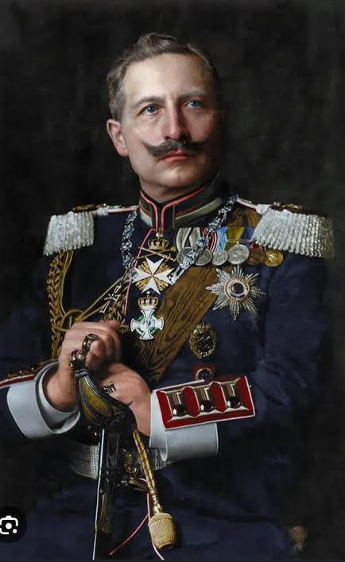
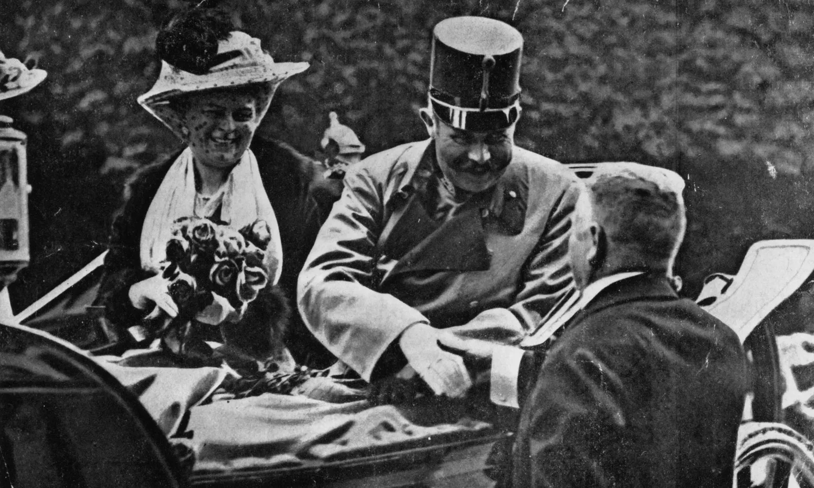
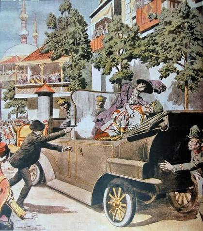
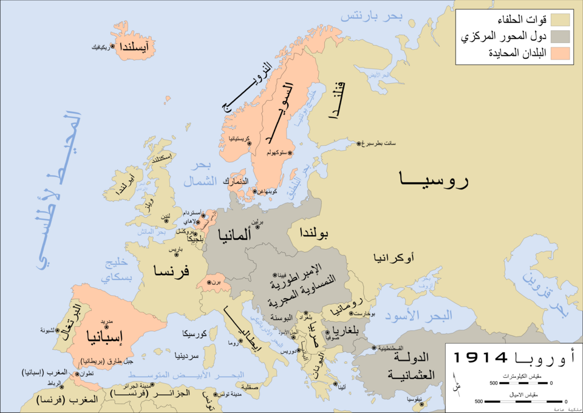
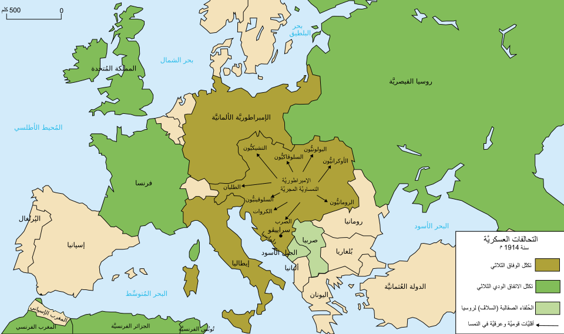
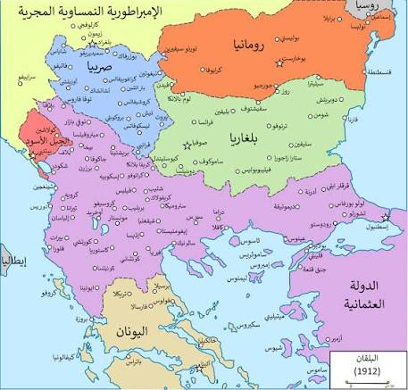
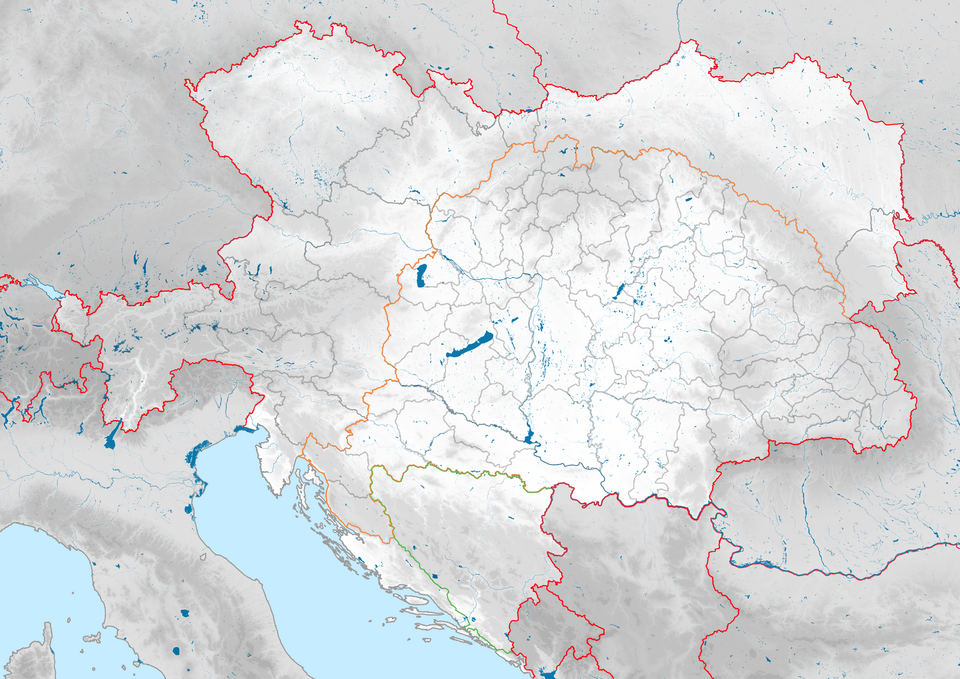
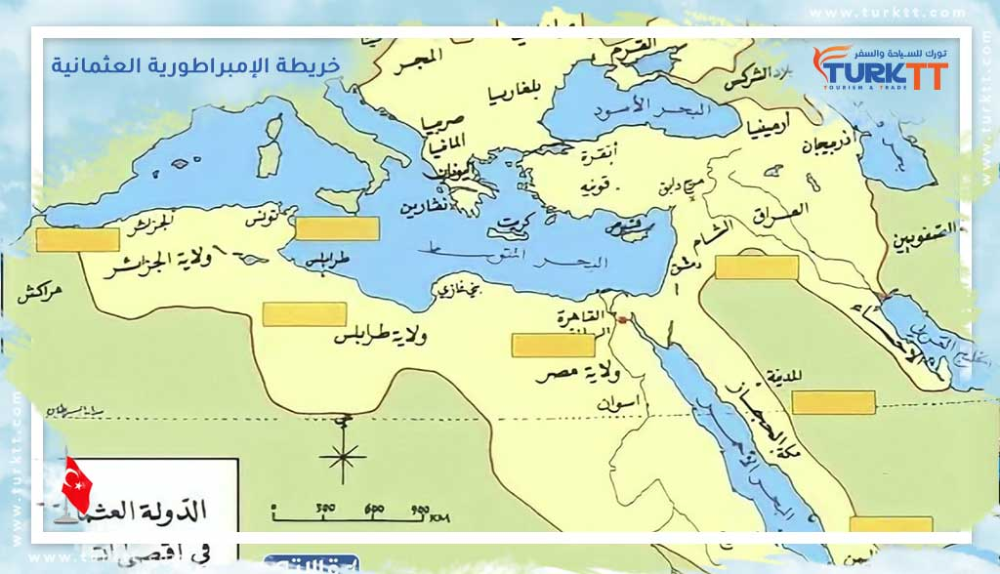
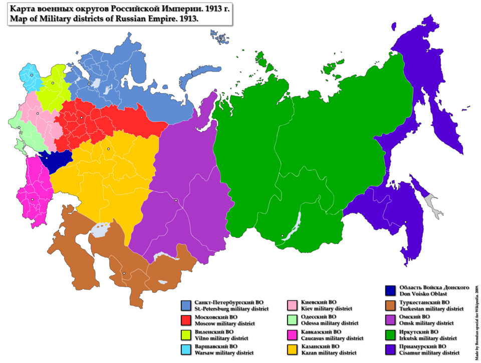

الحرب العالمية الأولى: الأسباب والنتائج
مقدمة
اندلعت الحرب العالمية الأولى في صائفة 1914 نتيجة لاحتدام التوتر بين القوى الإمبريالية الأوروبية منذ الربع الأخير من القرن 19، واستمرت الحرب الكبرى 4 سنوات وأسفرت عن تغييرات جيوسياسية عميقة. فما هي أسبابها وما هي نتائجها؟
I أسباب الحرب العالمية الأولى
1. احتداد التنافس الاستعماري
أ. احتد التنافس بين القوى الاستعمارية الأوروبية في الربع الأخير من القرن 19 نتيجة لعدة أسباب من أهمها:
- نضج الثورة الصناعية وتزايد حاجة أوروبا إلى الأسواق الخارجية لتصدير فوائض الإنتاج الصناعي.
- تعرض الاقتصاد الأوروبي إلى "الكساد الكبير" بين 1873 و 1886 وتراجع قيمة الأرباح على الاستثمار، مما دفع إلى ضرورة البحث عن مجال جديد لتصدير رؤوس الأموال.
- ظهور قوى أوروبية جديدة تتمثل في كل من ألمانيا وإيطاليا أصبحت تطالب بإعادة تقسيم العالم وبحقها في المستعمرات.
اشتد التنافس الألماني الإنجليزي حيث اعتمد إمبراطور ألمانيا غليوم الثاني سياسة اقتصادية جديدة تعرف بـ "السياسة العالمية" التي ترى أن مستقبل ألمانيا فوق الماء، فعمد إلى تعزيز القوة البحرية الألمانية والتغلغل الاقتصادي في الإمبراطورية العثمانية وآسيا مما أثار مخاوف إنجلترا.
ب. أدى التنافس الاستعماري إلى اندلاع أزمات دولية كادت أن تتحول إلى حروب من بينها:
- أزمة فاشودا 1898 بين فرنسا وإنجلترا وانتهت بعقد الوفاق بين الدولتين.
- أزمتا المغرب الأقصى بين ألمانيا وفرنسا وتمثلت في أزمة طنجة 1905 وأزمة أغادير 1911، وتمت تسويتهما باعتماد مبدأ الترضيات بتخلي فرنسا عن جزء من مستعمرتها الكونغو لفائدة ألمانيا مقابل الهيمنة على المغرب الأقصى 1912.
أدى تضارب المصالح إلى توتر العلاقات الدولية والدخول في سياسة الأحلاف والسباق نحو التسلح.
2. سياسة الأحلاف والسباق نحو التسلح
أ. سياسة الأحلاف:
- الحلف الثلاثي: بادرت ألمانيا في أكتوبر 1879 إلى عقد حلف مع الإمبراطورية النمساوية المجرية قصد عزل فرنسا ومنعها من استرجاع "الألزاس واللوران" التي سيطرت عليها ألمانيا 1870. انضمت إيطاليا إلى الحلف في مارس 1882 تعبيراً عن غضبها من فرض الحماية الفرنسية على تونس (1881). غير أن إيطاليا أمضت اتفاقاً سرياً مع فرنسا للبقاء على الحياد (1902)، ثم انسحبت من الحلف الثلاثي عام 1915 بسبب مطالبها الترابية في مناطق ترياست وترنتان ودلماسيا الخاضعة للسيادة النمساوية، وانتسبت إلى الوفاق الثلاثي بموجب معاهدة لندن السرية التي تعهدت فيها دول الوفاق بتلبية تلك المطالب. ثم تدعّم الحلف الثلاثي لاحقاً بانضمام الإمبراطورية العثمانية (1914) وبلغاريا (1915).
- الوفاق الثلاثي: للخروج من عزلتها بادرت فرنسا بعقد وفاق مع إنجلترا 1904 ومع الإمبراطورية الروسية (انسحبت بسبب الثورة البلشفية 1917). كان من أهداف الوفاق الثلاثي تطويق ألمانيا وإخراج فرنسا من عزلتها. ثم تدعّم الوفاق بانضمام اليابان (1914) ورومانيا والبرتغال ثم إيطاليا (1915) والولايات المتحدة الأمريكية (1917).
ب. السباق نحو التسلح:
انخرطت الأحلاف في السباق نحو التسلح بالترفيع من مدة الخدمة العسكرية من سنتين إلى ثلاث سنوات إجبارياً والترفيع في عدد القوات العسكرية، فبلغت سنة 1913 في ألمانيا 820 ألف وفي الإمبراطورية الروسية 1.8 مليون، إلى جانب احتدام التنافس الألماني الإنجليزي في مجال التسلح البحري. كما تدعمت ميزانيات الدفاع وتضاعفت النفقات العسكرية.
3. تأجج الشعور القومي في أوروبا الوسطى ومنطقة البلقان
مثلت أوروبا الوسطى ومنطقة البلقان مجالاً للتوتر نتيجة لعاملين:
- تعدد القوميات من سلاف وتشيك ومجريين... التي تسعى إلى تكوين كيانات مستقلة، على غرار سلاف الجنوب الذين استفادوا من دعم صربيا.
- تحول المنطقة إلى مسرح للصراع بين الإمبراطورية الروسية (التي كانت تطمح إلى الوصول إلى المياه الدافئة عبر السيطرة على مضيق البسفور) والإمبراطورية النمساوية المجرية (التي كانت تطمح إلى الحصول على منفذ على البحر الأدرياتيكي باحتلال البوسنة والهرسك 1908).
أدى التوتر إلى اندلاع الحروب البلقانية 1912 و1913 وتنامي الحركات القومية مثل الحركة القومية السلافية.
4. حادثة سراييفو واندلاع الحرب الكبرى
تم اغتيال ولي العهد النمساوي فرنسوا فرديناند من قبل طالب بوسني ينتمي إلى حركة قومية سلافية في 28 جوان 1914. اتهمت النمسا صربيا وحملتها مسؤولية الاغتيال وطالبت بإرسال قضاة للمشاركة في التحقيق، غير أن صربيا رفضت ذلك واعتبرته مساً بسيادتها. دفع ذلك النمسا إلى إعلان الحرب عليها يوم 28 جويلية 1914 وذلك بتحريض من ألمانيا التي أرسلت إنذاراً إلى كل من فرنسا وإنجلترا، وبحكم الأحلاف القائمة تحولت الحرب من حرب بين طرفين إلى حرب عالمية، كما انضمت دول أخرى إلى الحلفين مثل انضمام اليابان (1914) وإيطاليا (1915) ورومانيا والبرتغال والولايات المتحدة الأمريكية (1917) إلى جانب الوفاق الثلاثي، وانضمام الإمبراطورية العثمانية (1914) وبلغاريا (1915) إلى دول المركز.
خاتمة
شكلت الأسباب المتشابكة من تنافس استعماري وأحلاف وتسابق نحو التسلح وتأجج القوميات، بالإضافة إلى حادثة سراييفو، الشرارة التي فجرت الحرب العالمية الأولى، والتي ستترك نتائج جيوسياسية واقتصادية هائلة أعادت تشكيل العالم.
📖 تعريفات
👤 شخصيات
- غليوم الثاني: إمبراطور ألمانيا (1888–1918)، وُلد في 27 جانفي 1859 ببرلين وتوفي في 4 جوان 1941 بمنفاه في دورن بهولندا. تبنى سياسة «السياسة العالمية» (Weltpolitik) الهادفة إلى تعزيز النفوذ البحري والاستعماري لألمانيا بعد عزله للمستشار بسمارك عام 1890. سعى إلى بناء أسطول بحري قوي ينافس البحرية البريطانية، وتغلغل اقتصادياً في الدولة العثمانية وآسيا، مما زاد من عزلة ألمانيا الدولية وأدى إلى توتر علاقاتها مع إنجلترا وفرنسا، ومهد لانخراطها في الحرب العالمية الأولى. تنازل عن العرش في 9 نوفمبر 1918 وهرب إلى هولندا.
- فرنسوا فرديناند: ولي عهد الإمبراطورية النمساوية المجرية، وُلد في 18 ديسمبر 1863 بغراتس وتوفي في 28 جوان 1914 بسراييفو. اغتيل مع زوجته صوفيا شوتيك على يد الطالب البوسني غافريلو برينسيب (1894–1918) المنتمي لحركة «اليد السوداء» القومية السلافية. اتخذت النمسا من هذا الاغتيال ذريعة لتوجيه إنذار لصربيا ثم إعلان الحرب عليها في 28 جويلية 1914، مما أشعل سلسلة التحالفات الأوروبية وفجر الحرب العالمية الأولى.
🌍 دول ومناطق
- ألمانيا: قوة إمبريالية صاعدة توحدت في 18 جانفي 1871 (الإمبراطورية الألمانية 1871–1918) وشهدت نمواً صناعياً وعسكرياً متسارعاً. سعت في عهد الإمبراطور غليوم الثاني إلى انتزاع مكانة استعمارية وتوسيع أسطولها البحري، فدخلت في تنافس حاد مع إنجلترا وفرنسا. شكلت مع النمسا-المجر وإيطاليا الحلف الثلاثي (1882)، ثم أصبحت القوة المحورية في دول المركز خلال الحرب، وانتهت بهزيمتها وتوقيع معاهدة فرساي (28 جوان 1919) التي أثقلتها بتعويضات باهظة واقتطعت أجزاء من أراضيها.
- الإمبراطورية النمساوية المجرية: ملكية مزدوجة متعددة القوميات قامت بموجب تسوية 1867 بين النمسا والمجر (1867–1918)، عاشت توترات داخلية حادة بسبب المطالب القومية. ضمت البوسنة والهرسك عام 1908 مما صعّد الصراع مع صربيا وروسيا في منطقة البلقان. كانت أول من أعلن الحرب على صربيا في 28 جويلية 1914 بعد حادثة سراييفو، وبحكم تحالفاتها انجرفت إلى الحرب العالمية الأولى التي انتهت بتفككها إلى دول قومية صغرى بموجب معاهدات سان جرمان (1919) وتريانون (1920).
- صربيا: مملكة سلافية في البلقان (أُعلنت مملكة عام 1882) سعت إلى توحيد السلاف الجنوبيين تحت رايتها، ودعمت الحركات القومية المناهضة للنمسا داخل البوسنة والهرسك. اتُهمت بالتورط في اغتيال ولي العهد النمساوي، وكان رفضها للإنذار النمساوي سبباً مباشراً في إعلان النمسا الحرب عليها في 28 جويلية 1914، فانطلقت شرارة الحرب العالمية الأولى. كانت مسرحاً للحروب البلقانية 1912-1913، وأصبحت لاحقاً (1918) نواة مملكة الصرب والكروات والسلوفينيين (يوغوسلافيا).
- الإمبراطورية العثمانية: دولة متعددة القوميات تأسست حوالي 1299 وكانت تُعرف بـ «رجل أوروبا المريض» بسبب ضعفها المتزايد. انضمت إلى جانب دول المركز في الحرب العالمية الأولى في 2 نوفمبر 1914 على أمل استعادة أمجادها. بعد الهزيمة (هدنة مودروس 30 أكتوبر 1918)، تعرضت للتقسيم بموجب معاهدة سيفر (10 أوت 1920) التي وضعت مناطق واسعة تحت السيطرة الأجنبية. أدى رفض مصطفى كمال لهذه المعاهدة إلى حرب الاستقلال وتوقيع معاهدة لوزان (24 جويلية 1923) التي أسست للجمهورية التركية الحديثة (29 أكتوبر 1923)، وأُلغيت السلطنة في 1 نوفمبر 1922.
- الإمبراطورية الروسية: قوة عظمى متعددة القوميات (1721–1917) حكمتها أسرة رومانوف، اعتبرت نفسها حامية السلاف الأرثوذكس في البلقان. طمحت للوصول إلى المياه الدافئة عبر مضيق البسفور والدردنيل، فدخلت في صراع مع النمسا-المجر والعثمانية. انضمت إلى الوفاق الثلاثي، لكنها تعرضت لثورة 1917 البلشفية (7 نوفمبر 1917) التي أخرجتها من الحرب بتوقيع معاهدة بريست-ليتوفسك (3 مارس 1918)، وانتهت الإمبراطورية بتنازل القيصر نيقولا الثاني (2 مارس 1917) وإعدامه مع أسرته في 17 جويلية 1918.
- الولايات المتحدة الأمريكية: قوة اقتصادية صاعدة ظلت محايدة في بداية الحرب (1914–1917)، لكنها دخلتها في 6 أفريل 1917 إلى جانب الوفاق الثلاثي بعد أن تضررت مصالحها التجارية بسبب حرب الغواصات الألمانية غير المقيّدة (إغراق لوسيتانيا 7 ماي 1915) وقضية تلغراف زيمرمان (جانفي 1917). قدمت دعماً مالياً وعسكرياً حاسماً تحت قيادة الرئيس وودرو ولسن (1856–1924)، وتحولت بعد الحرب إلى أكبر دائن في العالم ومركز للثقل المالي العالمي بانتقاله من لندن إلى نيويورك. كما حاول ولسن صياغة سلام قائم على مبادئه المثالية (مبادئ النقاط الأربع عشرة).
- فرنسا: إحدى القوى الأوروبية الكبرى (الجمهورية الفرنسية الثالثة 1870–1940) التي خسرت إقليمي الألزاس واللوران لصالح ألمانيا بعد حرب 1870 (معاهدة فرانكفورت 10 ماي 1871)، فظلت تطمح لاستعادتهما والثأر. بادرت بعقد تحالفات (الوفاق الودي مع إنجلترا في 8 أفريل 1904، والوفاق الروسي 1892–1894) للخروج من عزلتها وتطويق ألمانيا. تحملت العبء الأكبر من القتال على الجبهة الغربية، وسعت في مؤتمر الصلح إلى فرض شروط قاسية على ألمانيا لإضعافها وضمان أمنها القومي (استعادة الألزاس واللوران بموجب معاهدة فرساي).
- إنجلترا: أكبر قوة بحرية واستعمارية آنذاك، اعتمدت سياسة «التوازن الأوروبي» لمنع هيمنة أي دولة على القارة. شعرت بتهديد متزايد من طموحات ألمانيا البحرية والاستعمارية، فدخلت الحرب في 4 أوت 1914 بعد خرق ألمانيا لحياد بلجيكا (خطة شليفن). لعبت دوراً محورياً في فرض الحصار البحري على دول المركز، كما كانت طرفاً أساسياً في مؤتمر الصلح وسعت إلى إضعاف ألمانيا دون تدميرها بالكامل للحفاظ على التوازن الأوروبي.
- بلغاريا: مملكة بلقانية (1908–1946) خسرت أراضي واسعة في حرب البلقان الثانية (1913)، مما دفعها للانضمام إلى دول المركز في 14 أكتوبر 1915 سعياً لاستعادة مقدونيا ومناطق أخرى. شاركت في العمليات العسكرية ضد صربيا ورومانيا، وانتهت الحرب بتوقيعها هدنة سالونيك (29 سبتمبر 1918) ثم معاهدة نويي (27 نوفمبر 1919) التي فرضت عليها قيوداً عسكرية وخسائر إقليمية جديدة.
- اليابان: قوة آسيوية صاعدة (إمبراطورية اليابان 1868–1947) انضمت إلى الوفاق الثلاثي في 23 أوت 1914، واستولت على المستعمرات الألمانية في الصين والمحيط الهادئ (مثل شاندونغ وجزر ماريانا وكارولين). استفادت اقتصادياً من الحرب بتوسع صناعاتها وصادراتها، وجلست على طاولة المنتصرين في مؤتمر الصلح (معاهدة فرساي)، مما عزز مكانتها الدولية.
- رومانيا: مملكة بلقانية انضمت إلى الوفاق الثلاثي في 27 أوت 1916 بعد تلقّي وعود بالحصول على أراضٍ نمساوية مجرية (ترانسلفانيا). تعرضت لهزيمة سريعة واحتلال جزئي (بوخارست سقطت في 6 ديسمبر 1916)، لكنها استفادت من انتصار الوفاق في نهاية الحرب، وتوسعت إقليمياً بشكل كبير بموجب معاهدات الصلح (استعادة ترانسلفانيا وبوكوفينا وبيسارابيا).
- البرتغال: جمهورية صغيرة (الجمهورية البرتغالية الأولى 1910–1926) دخلت الحرب إلى جانب الوفاق الثلاثي في 9 مارس 1916 دفاعاً عن مستعمراتها الإفريقية ومصالحها التجارية مع بريطانيا. شاركت بقوات محدودة (فيلق المشاة البرتغالي) على الجبهة الغربية، واستفادت معنوياً من موقعها ضمن الدول المنتصرة.
⚔️ أحداث هامة
- أزمة فاشودا (1898): مواجهة استعمارية كادت تشعل حرباً بين فرنسا وإنجلترا في منطقة فاشودا بالسودان (18 سبتمبر – 3 نوفمبر 1898)، حين التقت بعثة فرنسية بقيادة مارشان تهدف لربط ممتلكاتها من الغرب إلى الشرق مع القوات البريطانية بقيادة كتشنر المتجهة جنوباً من مصر. انتهت الأزمة بانسحاب فرنسا دبلوماسياً ومهدت لتسوية الخلافات الاستعمارية بين البلدين، ثم لتوقيع الوفاق الودي (Entente Cordiale) في 8 أفريل 1904.
- أزمة طنجة (1905): أولى الأزمات المغربية (31 مارس 1905)، أثارها الإمبراطور غليوم الثاني بزيارته إلى طنجة ودعمه لاستقلال المغرب في وجه الطموحات الفرنسية. أدت إلى انعقاد مؤتمر الجزيرة الخضراء (16 جانفي – 7 أفريل 1906) الذي أكد سيادة المغرب مع إعطاء فرنسا وإسبانيا امتيازات أمنية. فشلت ألمانيا في كسر الوفاق الفرنسي-البريطاني بل زادت من تماسكه.
- أزمة أغادير (1911): أزمة مغربية ثانية (1 جويلية 1911) أرسلت خلالها ألمانيا الزورق الحربي «بانثر» إلى ميناء أغادير احتجاجاً على تقدم النفوذ الفرنسي في المغرب. سُويت الأزمة بمعاهدة 4 نوفمبر 1911 بتقديم تنازلات استعمارية لألمانيا (جزء من الكونغو الفرنسي «الكونغو الجديد») مقابل قبولها بالحماية الفرنسية على المغرب (30 مارس 1912). عمقت الأزمة الكراهية بين فرنسا وألمانيا وسرّعت سباق التسلح.
- الاتفاق السري بين إيطاليا وفرنسا (1902): اتفاق دبلوماسي سري (1–2 نوفمبر 1902) وقّعته إيطاليا مع فرنسا، تعهدت بموجبه روما بالبقاء على الحياد في حال تعرضت فرنسا لهجوم ألماني، رغم كون إيطاليا لا تزال عضواً في الحلف الثلاثي. كشف هذا الاتفاق هشاشة الحلف الثلاثي وازدواجية التحالفات الأوروبية قبل الحرب.
- حادثة سراييفو (28 جوان 1914): اغتيال الأرشيدوق فرنسوا فرديناند، ولي عهد النمسا-المجر، وزوجته صوفيا في 28 جوان 1914 بسراييفو على يد الطالب الصربي البوسني غافريلو برينسيب (1894–1918). اعتبرته النمسا دليلاً على تورط صربيا في دعم الإرهاب، فوجهت إليها إنذاراً قاسياً (23 جويلية 1914) ثم أعلنت الحرب في 28 جويلية 1914، مما فجّر نظام التحالفات الأوروبية وأشعل الحرب العالمية الأولى.
- الحروب البلقانية (1912-1913): حربان متعاقبتان في منطقة البلقان: الأولى (8 أكتوبر 1912 – 30 ماي 1913) شنتها عصبة البلقان (صربيا، بلغاريا، اليونان، الجبل الأسود) ضد الدولة العثمانية وانتزعت منها معظم أراضيها الأوروبية (معاهدة لندن 30 ماي 1913). الثانية (29 جوان – 18 جويلية 1913) نشبت بين بلغاريا من جهة وحلفائها السابقين إلى جانب رومانيا والعثمانيين من جهة أخرى (معاهدة بوخارست 10 أوت 1913). انتهت بهزيمة بلغاريا وزيادة التوتر الإقليمي، مما جعل البلقان «برميل بارود» أوروبا.
- الثورة البلشفية (1917): ثورة قادها فلاديمير لينين (1870–1924) والحزب البلشفي في روسيا في 25 أكتوبر 1917 (7 نوفمبر بالتقويم الغريغوري)، أطاحت بالحكومة المؤقتة برئاسة كيرينسكي وأقامت نظاماً شيوعياً. كان من أول قراراتها الانسحاب من الحرب العالمية الأولى عبر توقيع معاهدة بريست-ليتوفسك مع ألمانيا في 3 مارس 1918، مما حرر القوات الألمانية للتركيز على الجبهة الغربية وأثر على مجرى الحرب.
📅 سنوات وفترات
- 1879: توقيع الحلف الثنائي بين ألمانيا والنمسا-المجر (7 أكتوبر).
- 1882: انضمام إيطاليا إلى الحلف الثلاثي (20 ماي).
- 1898: أزمة فاشودا بين فرنسا وإنجلترا.
- 1902: الاتفاق السري بين إيطاليا وفرنسا.
- 1904: توقيع الوفاق الودي بين فرنسا وإنجلترا (8 أفريل).
- 1905: اندلاع أزمة طنجة (31 مارس).
- 1908: احتلال النمسا-المجر للبوسنة والهرسك (6 أكتوبر).
- 1911: اندلاع أزمة أغادير (1 جويلية).
- 1912: فرض الحماية الفرنسية على المغرب الأقصى (30 مارس).
- 1913: اشتداد سباق التسلح وبلوغ الجيوش الأوروبية ذروتها.
- 1914: حادثة سراييفو (28 جوان) واندلاع الحرب العالمية الأولى.
- 1915: انضمام إيطاليا إلى الوفاق الثلاثي بموجب معاهدة لندن السرية (26 أفريل).
- 1917: دخول الولايات المتحدة الأمريكية الحرب (6 أفريل) والثورة البلشفية في روسيا (7 نوفمبر).
📜 معاهدات
- معاهدة لندن السرية (1915): اتفاق سري (26 أفريل 1915) بين إيطاليا ودول الوفاق الثلاثي (فرنسا، إنجلترا، روسيا) وعد إيطاليا بالحصول على أراضٍ نمساوية (ترياست، ترنتينو، أجزاء من دلماسيا) ومستعمرات ألمانية في إفريقيا مقابل دخولها الحرب إلى جانب الوفاق. شكل هذا الاتفاق الإطار القانوني لانسحاب إيطاليا من الحلف الثلاثي وانضمامها للحلف المقابل.
📌 أخرى
- السياسة العالمية: تعريب لمصطلح «Weltpolitik» وهي الاستراتيجية التوسعية التي انتهجها الإمبراطور غليوم الثاني بعد إقالة بسمارك عام 1890. هدفت إلى بناء أسطول بحري ضخم (خطة تيربيتز 1898)، واقتناص مستعمرات في إفريقيا وآسيا، ومد نفوذ اقتصادي عبر مشروع سكة حديد برلين-بغداد (1903). أدت هذه السياسة إلى صدام مباشر مع المصالح البريطانية والفرنسية والروسية وساهمت في تشكيل أحلاف مضادة لألمانيا.
- الكساد الكبير: أزمة اقتصادية عالمية ضربت الاقتصاديات الرأسمالية بين 1873 و1896 (أو حتى 1886). تراجعت خلالها الأسعار والأرباح وزادت البطالة، مما دفع الدول الأوروبية إلى فرض سياسات حمائية والبحث عن أسواق خارجية لتصريف فائض الإنتاج ورؤوس الأموال، فاشتد التنافس الاستعماري وزاد التوتر بين القوى الكبرى.
- الحلف الثلاثي: تحالف عسكري دفاعي نشأ تدريجياً بين ألمانيا والإمبراطورية النمساوية المجرية (أكتوبر 1879) وانضمت إليه إيطاليا في مارس 1882. هدف في الأصل إلى عزل فرنسا والحفاظ على الوضع القائم في أوروبا. ثم تعزز بانضمام الدولة العثمانية (2 نوفمبر 1914) وبلغاريا (14 أكتوبر 1915) ليشكل نواة «دول المركز» خلال الحرب العالمية الأولى.
- الوفاق الثلاثي: تكتل سياسي وعسكري ضم فرنسا وإنجلترا والإمبراطورية الروسية، تشكل عبر سلسلة من الاتفاقيات الثنائية (الوفاق الودي 1904، الوفاق الروسي-الفرنسي 1892–1894، الاتفاق الإنجليزي-الروسي 1907). كان يهدف إلى تطويق ألمانيا وإخراج فرنسا من عزلتها الدبلوماسية. اتسع لاحقاً لينضم إليه اليابان (23 أوت 1914) وإيطاليا (26 أفريل 1915) ورومانيا (27 أوت 1916) والبرتغال (9 مارس 1916) والولايات المتحدة أثناء الحرب (6 أفريل 1917).
🗺️ خرائط ومعطيات مصورة









